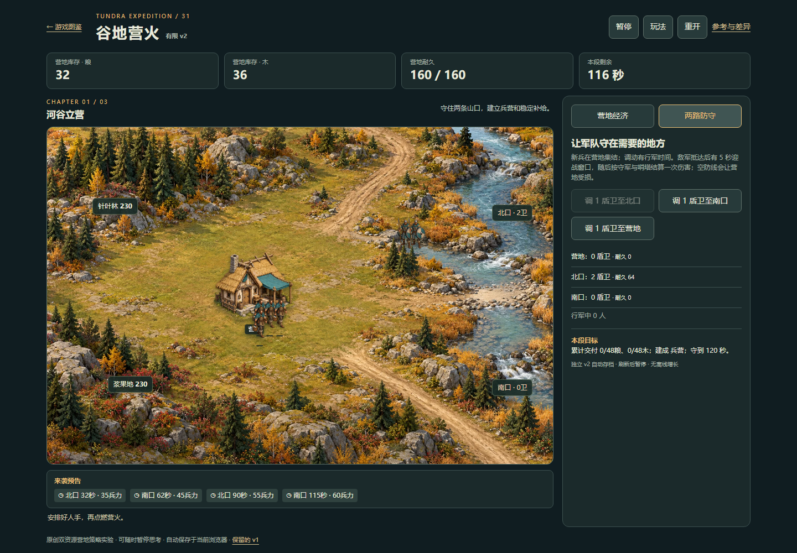
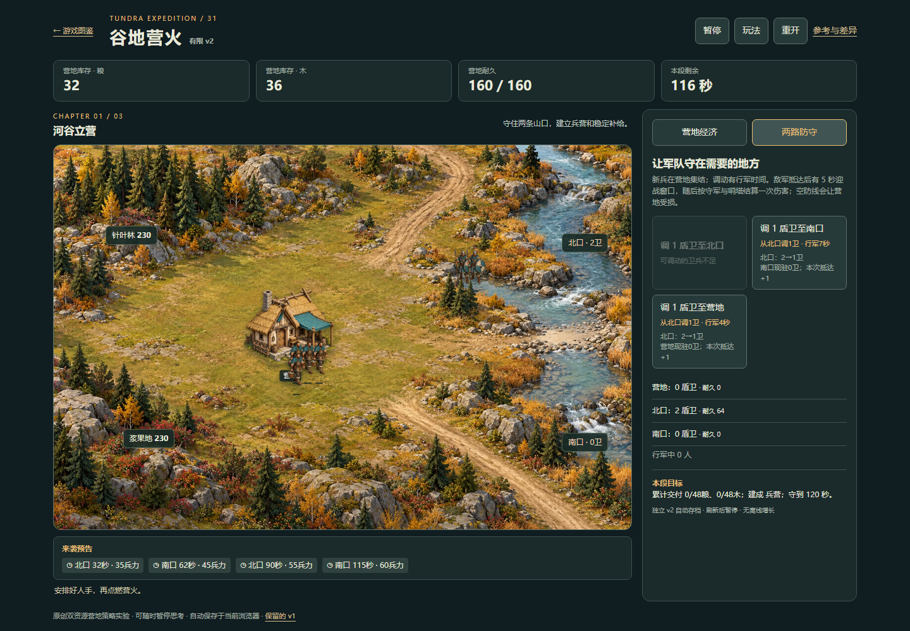
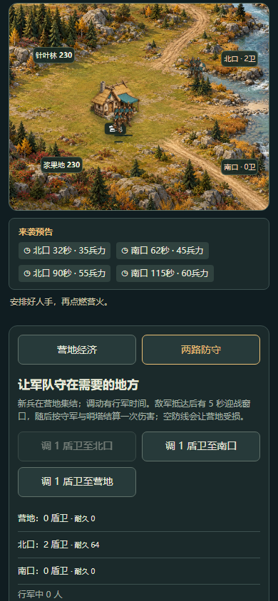
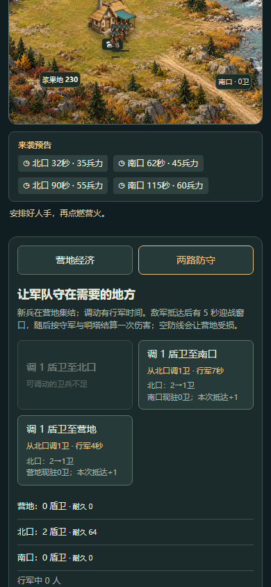
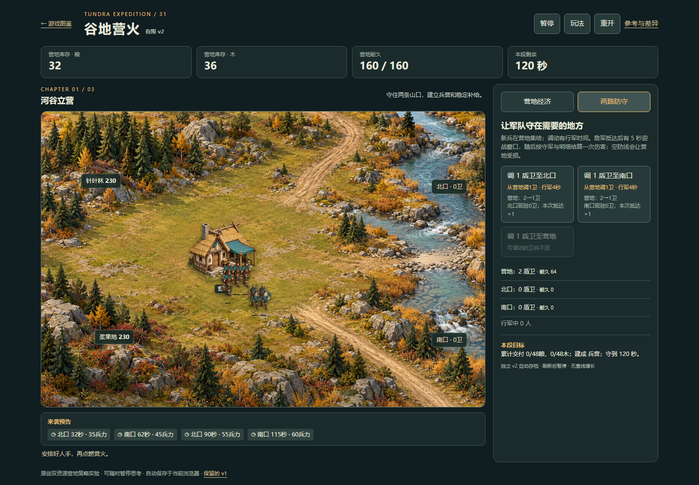
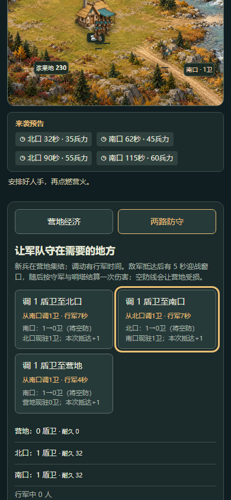
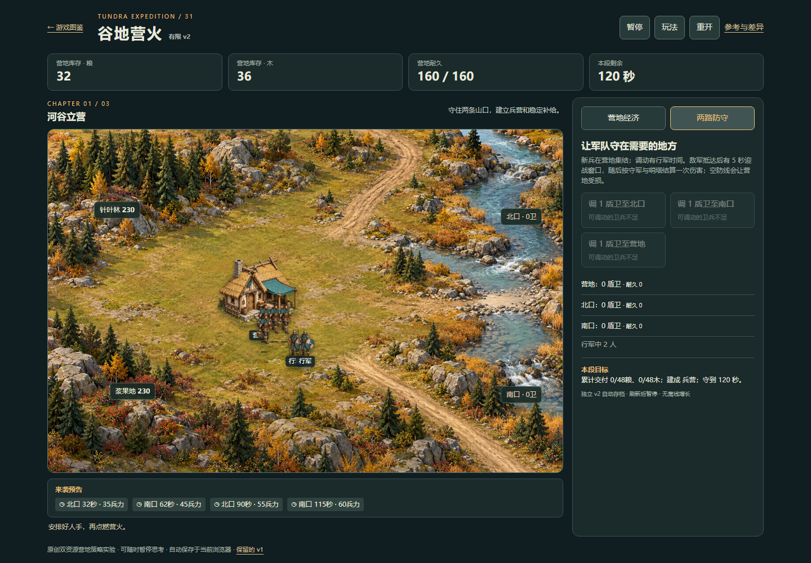
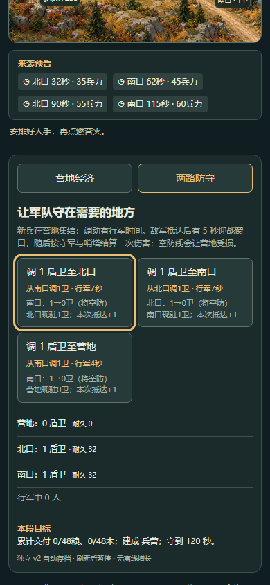
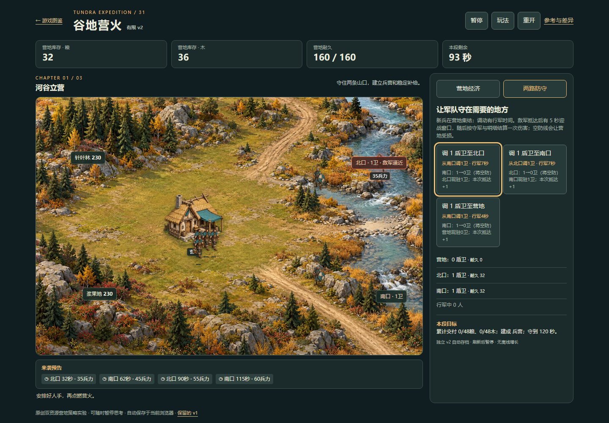

远征v2：调兵前看清来源
普通UI确认预备队耗尽后，目的地按钮没说明会从另一防线抽调。现在直接显示来源、4/7秒、来源余量与将空防提示；原规则、存档和操作步数不变。
试玩 · 判断与边界 · 修改前普通UI · 修改后普通UI · 原生键盘复查 · 8组逻辑测试 · 限制与测试修正 · 覆盖索引
- 全新独立profile：修改前4次、修改后6次普通调兵，自然等待行军，未注入状态/时间/存档。
- 营地优先、跨线抽调、两线各1、全员在途、刷新与可见键盘焦点通过。
- count2混合来源、死亡与终态仅为合法离线模型；普通UI仍每次1人。没有全三段复测。
- 390CSS模拟不是实机；真人手感、审美和辅助技术仍未验收。线上发布后另行验证。

修改前：按钮只写目的地，北口2人、营地0人
修改后：从北口调1卫，7秒，北口2→1
修改前390CSS：需要自行推断来源
修改后390CSS：来源和抽调余量直接可读
营地预备队足够：优先从营地调1卫、4秒、2→1
两线各1卫：跨线抽调会将来源防线降为0，提前标明将空防
两卫均在行军：按钮禁用并说明可调动卫兵不足
390CSS原生Tab/ShiftTab可见焦点，模拟刷新后仍在同一按钮
桌面原生可见焦点；没有新增确认或自动调兵